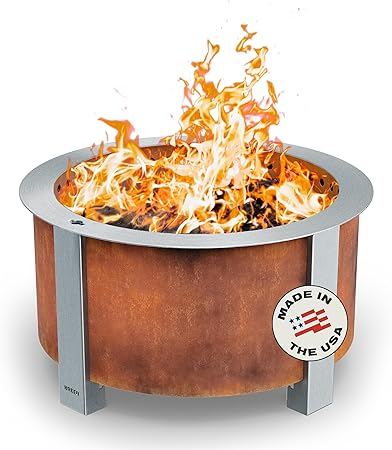
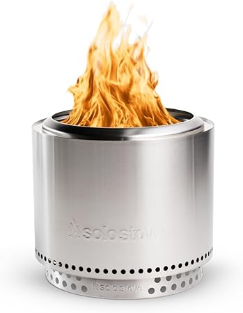
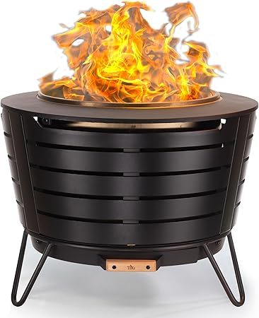
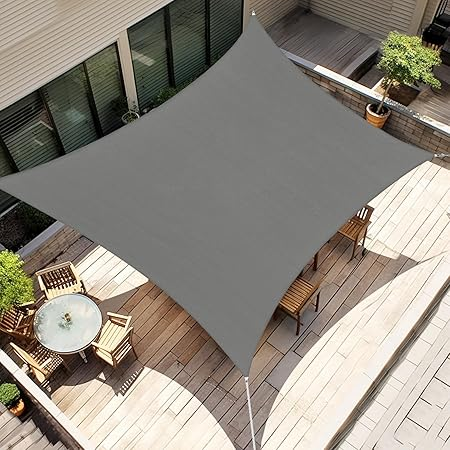
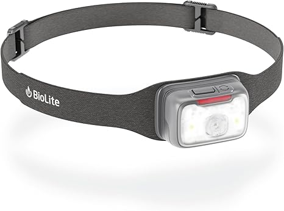

May 2026
We started covering dragonfirewood because the "top 10" lists online clearly hadn't tested anything. Our take is grounded in actual experience.


⭐ 4.6 · $52.39
$36.99
⭐ 4.7 · $276.49
⭐ 4.8 · $237.49
⭐ 4.7 · $509.15

Breeo X Series — Editor's pick
Solo Stove Bonfire 2.0 — Great value
Tiki Brand Fire Pit — Top rated
Blue Sky Outdoor Ridge — Highly reviewed
BioLite FirePit — Consistently ratedSkipping negative reviews — A 4.5-star product with durability complaints tells you more than a 5-star product with 8 reviews.
Waiting for the perfect deal — If you need dragonfirewood now, buy now. A 10% discount in 3 months costs you 3 months of use.
Not measuring — "It looked bigger online" is the #1 return reason for dragonfirewood. Measure twice.
Blind brand loyalty — Your favorite brand might not make the best dragonfirewood. Stay open to better options.
The dragonfirewood space keeps improving, and 2026 is a solid time to buy. See our full rankings at dragonfirewood.com for side-by-side comparisons.